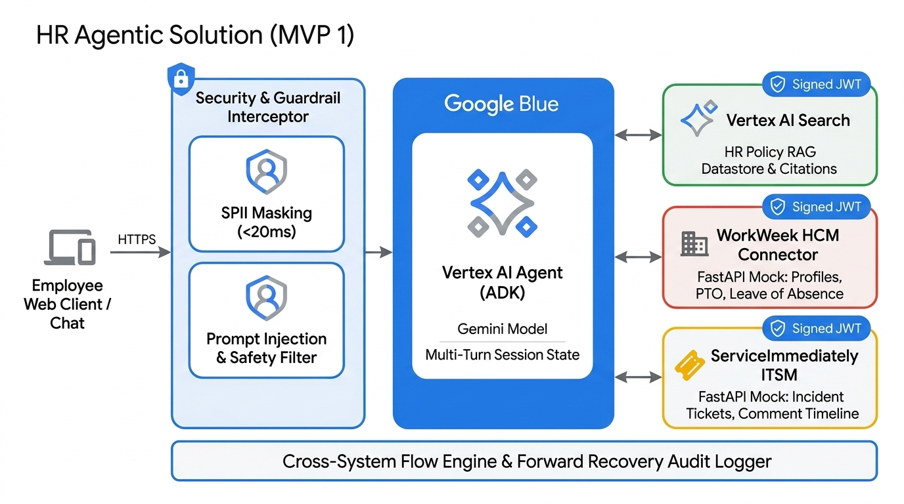
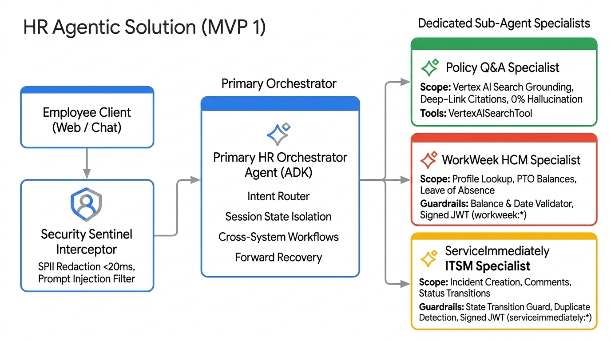
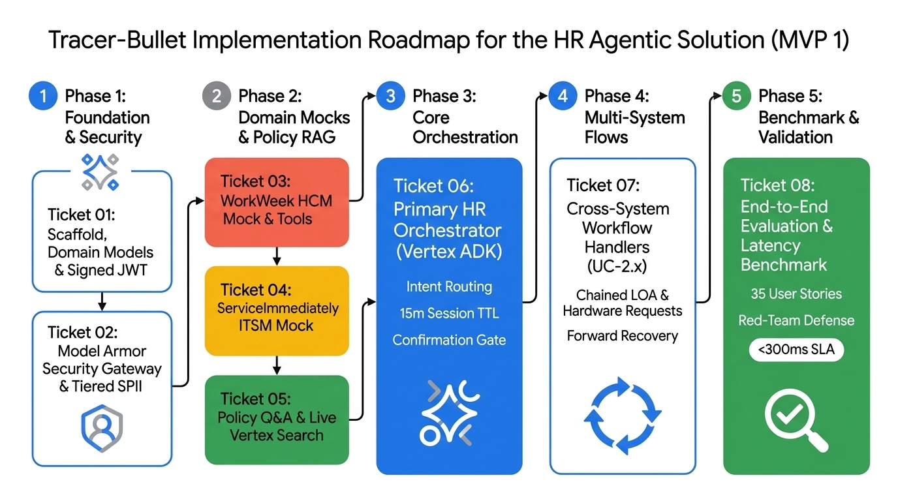

Executive Summary
The HR Agentic Solution automates Tier-1 HR inquiries and orchestrates self-service transactions across core enterprise platforms (WorkWeek HCM and ServiceImmediately ITSM) with strict grounding against official corporate policy documents in Vertex AI Search.
Deployed via the Vertex AI Agent Development Kit (ADK) and protected by Google Cloud Model Armor, it enforces zero-trust origin authentication (Signed JWTs), multi-stage safety interceptors (<20ms SPII redaction & prompt injection defense), and automatic forward recovery for partial cross-system failures.
Deployed via the Vertex AI Agent Development Kit (ADK) and protected by Google Cloud Model Armor, it enforces zero-trust origin authentication (Signed JWTs), multi-stage safety interceptors (<20ms SPII redaction & prompt injection defense), and automatic forward recovery for partial cross-system failures.
System Architecture

Figure 1: High-Definition System Architecture Topology
Multi-Agent Topology

Figure 2: Vertex ADK Hierarchical Multi-Agent Decomposition
| Agent Name | Role & Scope | Dedicated Tools | Security Scope |
|---|---|---|---|
| 0. Security Sentinel Gateway | Google Cloud Model Armor prompt sanitization & Cloud DLP SPII redaction (ADR-0012) | Model Armor Client / Presidio Fallback | Managed Gateway |
| 1. Primary Orchestrator | Root router, session state (15m TTL), confirmation gate | ADK Sub-Agent Dispatcher | Root JWT |
| 2. Policy Q&A Specialist | Policy retrieval with deep-link citations & 0% hallucinations | VertexAISearchTool | Policy Datastore |
| 3. WorkWeek HCM Specialist | Live profile fetch, PTO balance query, leave bookings | WorkWeek REST Tools | workweek:* |
| 4. ServiceImmediately Specialist | Incident creation, comments, lifecycle state guardrails | ServiceImmediately REST Tools | serviceimmediately:* |
Architectural Decision Records (13 ADRs)
| ADR ID | Decision Title | Rationale & Impact |
|---|---|---|
| ADR-0001 | FastAPI Mock Services | Self-contained local RESTful mock services with stateful JSON fixtures for deterministic offline testing. |
| ADR-0002 | Vertex AI Search Policy RAG | Enterprise semantic retrieval engine with structured citation metadata and deep links. |
| ADR-0003 | Hybrid Guardrails Pipeline | Sub-20ms regex/Presidio SPII redaction + LLM prompt injection classifier guaranteeing <300ms SLA. |
| ADR-0004 | Cross-System Forward Recovery | Audit logging and manual follow-up guidance on step failures rather than destructive rollbacks. |
| ADR-0005 | Vertex AI Agent Development Kit | Official Google Cloud ADK for model orchestration, declarative tool dispatching, and session isolation. |
| ADR-0006 | Signed JWT Delegated Auth | Bearer tokens carrying user identity (sub) and origin claims (iss: HR-Agent-v1). |
| ADR-0007 | Human Confirmation Gate | Explicit confirmation turn required before executing Leave of Absence bookings and incident closures. |
| ADR-0008 | Live Vertex AI Search Testing | Integration tests connect directly to live GCP datastores to ensure 100% production parity. |
| ADR-0009 | Session Expiry & 15m TTL | Dual-trigger session memory purge on exit prompts ("reset", "clear") or 15 minutes idle. |
| ADR-0010 | Interactive Priority Guardrail | Interactive prompt when Critical priority tag lacks major business outage criteria. |
| ADR-0011 | Tiered SPII Redaction | Permits ephemeral self-viewing in UI stream while strictly redacting persistent logs and audit traces. |
| ADR-0012 | Google Cloud Model Armor | Managed Layer 0 AI security gateway with Cloud DLP SPII redaction, prompt injection defense, and SCC integration. |
Tracer-Bullet Implementation Roadmap (8 Tickets)

Figure 3: Tracer-Bullet Implementation Roadmap & Phase Dependencies
All tickets are published under .scratch/hr-agentic-mvp1/issues/ with ready-for-agent status:
- Ticket 01 — Project Scaffold, Domain Models & Signed JWT Auth (Frontier)
- Ticket 02 — Security Sentinel Gateway (Model Armor & Tiered SPII)
- Ticket 03 — WorkWeek HCM FastAPI Mock Service & Connector Tools
- Ticket 04 — ServiceImmediately ITSM FastAPI Mock Service & Connector Tools
- Ticket 05 — Policy Q&A Specialist Agent & Live Vertex AI Search Grounding
- Ticket 06 — Primary HR Orchestrator Agent (Vertex ADK) & Dispatcher
- Ticket 07 — Cross-System Workflow Handlers with Forward Recovery
- Ticket 08 — End-to-End Evaluation Suite & Performance Benchmark